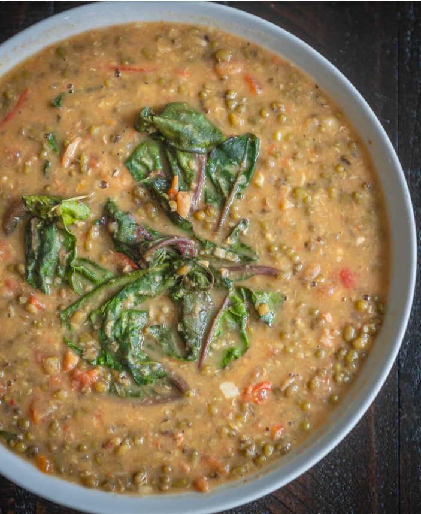
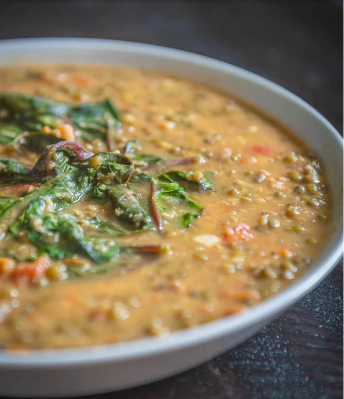
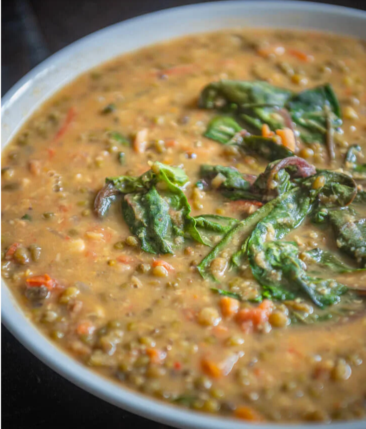

Ginisang Munggo (Monggo)
Ginisang Munggo
Some dishes in a certain cuisine are known to best describe the feeling of home-cooked meals from that particular country. For the Philippines, it can range from sinigang to fried bangus to longganisa. But Ginisang Munggo is perhaps one of the best standout dishes that can definitely bring to you the comfort of a Filipino…
Some dishes in a certain cuisine are known to best describe the feeling of home-cooked meals from that particular country. For the Philippines, it can range from sinigang to fried bangus to longganisa. But Ginisang Munggo is perhaps one of the best standout dishes that can definitely bring to you the comfort of a Filipino home. Hearty, healthy, and made of affordable ingredients, this dish isn’t so often cooked and served by moms for nothing.
THE GINISANG MONGGO
How to make Ginisang Munggo:
We will start by pouring 24 ounces of water in a pan, which we will boil. Once it starts boiling, you can place your 1 ½ cups of Mung beans inside. Let this simmer until the munggo gets soft. This should take about 35 to 50 minutes. But as you are waiting, you can also prepare the other ingredients you’ll be adding to the mix.
To add some more flavor to our Ginisang Munggo, we will be using 1 tablespoon of garlic, and 1 medium-sized onion and 1 medium-sized tomato, both of which are chopped. Put this in a separate pan, and start sautéing these together. Then incorporate your ½ lb. of thinly sliced pork. Now let all of these ingredients cook up nicely for 5 minutes.
Afterwards, we'll be adding 1 beef cube and 2 tablespoons of fish sauce for some more savory flavor. You could also use 1 teaspoon of beef powder in the place of the beef cube if this is unavailable. Then we will be letting this simmer for 10 minutes or at least until your meat gets tender. You can also pour in more water to make sure the meat is soft, but make sure that you also simmer for longer.
Now put your 5 to 8 pieces of medium-sized shrimp inside, which is also an optional ingredient. But this can add a mildly sweet and salty taste to your Ginisang Munggo, which can be very complementary to all our flavors! Now stir these all together, and cook the ingredients for 2 minutes.
Adding the Mung beans to the mix:
Let's grab our cooked munggo from earlier, and also add them to the pan. Start stirring again, and then let the pan simmer for 10 minutes. Then proceed to place your 2 cups of spinach and ½ cup of crushed pork rind or chicharon inside. And for our final touch to tie in all those ingredients together, we will be adding ¼ teaspoon of ground black pepper.
You now have a delicious plate of Ginisang Munggo fresh off the pan that'll be perfect for a party of 6! But you can keep your chef's hat on, and learn more delightfully nutritious Filipino recipes to serve!
Ingredients
- 1 1/2 cups Mung beans
- 1 tbsp garlic
- ½ lb pork thinly sliced
- 2 cups spinach (or alugbati)
- 1 piece tomato chopped
- 1 piece onion chopped
- 8 pieces shrimp optional
- 2 tablespoons fish sauce
- 24 ounces water for boiling
- 1 piece Knorr beef cube for flavoring
- 1/2 cup crushed pork rind chicharon
- 1/4 teaspoon ground black pepper
Instructions
- In a pan, put-in the water and bring to a boil
- In a pan, put-in the water and bring to a boil
- On a separate pan, sauté the garlic,onion, and tomato
- Add the pork. Cook for 5 mins
- Put-in the beef cube and fish sauce. Simmer for 10 mins or until the meat is tender. Note: If necessary, you may add water to help make the meat tender but make sure to add more time to simmer
- Add the shrimp. Stir and then cook for 2 minutes.
- Pour the cooked Mung beans. Stir and then simmer for 10 minutes
- Add the spinach and pork rinds (chicharon)
- Sprinkle the ground black pepper
- Serve hot. Share and Enjoy!
Nutrition Information
Serving: 6g Calories: 337kcal (17%) Carbohydrates: 41g (14%) Protein: 21g (42%) Fat: 11g (17%) Saturated Fat: 3g (15%) Polyunsaturated Fat: 2g Monounsaturated Fat: 4g Trans Fat: 1g Cholesterol: 31mg (10%) Sodium: 726mg (30%) Potassium: 922mg (26%) Fiber: 10g (40%) Sugar: 5g (6%) Vitamin A: 1172IU (23%) Vitamin C: 10mg (12%) Calcium: 113mg (11%) Iron: 4mg (22%)